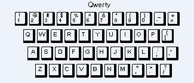
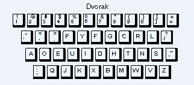

Input Devices
Regardless of the type of system unit that has been chosen, data still needs to be entered into the computer for processing. Unless the data source is a type of electronic sensor that checks the environment and automatically sends relevant data to the computer, the human-computer interface (HCI) most likely uses one of the following devices to enter data into the computer.
| Device Category |
Typical Peripherals |
| Input devices |
- keyboard
- mouse
- scanner
- digital camera
- web camera
- PC video camera
- microphone
|
Within the above list of typical input devices, you will find a wide variety of configurations and choices. We will look at just one of these here—the keyboard—but much of the same information applies to deciding which mouse device to use.
PC Keyboards: How to Decide Which Keyboard Is Best for You
Ergonomics is the study of designing equipment or tools to help users work comfortably and reduce strains on the body that can cause injury, such as carpal tunnel syndrome. Carpal tunnel syndrome is a painful condition affecting the hands and wrists, usually associated with repetitive movements such as using a keyboard. Thus, you should ask yourself several questions when shopping for a keyboard, whether for a new desktop system or to replace the keyboard you have. Even if you are working on a laptop, you have some options, although fewer than for a desktop system.
Here are some issues to consider:
- Do you want this keyboard to be wired or wireless? What are the advantages and disadvantages of each configuration? Those that connect via a cable (plugged into a USB port on the system unit) are the most cost effective, but they limit your mobility in terms of where or how close you must sit to the system unit and monitor. A wireless keyboard uses batteries and allows more flexibility in terms of distance from the system unit. Battery life should be considered when choosing a wireless keyboard.
- Connectivity protocols for a wireless keyboard
- Radio frequency (RF) keyboards can be used within about 15 feet of the system unit. The RF protocol for these wireless keyboards is similar to that used in the remote control unit for your television. You should ensure that there is no interference
to the frequency used by the keyboard.
- Infrared (IR) keyboards require line-of-sight to the system unit. They have a smaller range of use, about 5 to 10 feet. There is less chance of interference with the signal unless the keyboard is used on a very cluttered surface.
- Bluetooth keyboards can be used up to 30 feet from the system unit and are less prone to interference than RF keyboards. It is advantageous to use only plug-and-play units—ones that work right out of the box—because setting up a Bluetooth
device that is not plug-and-play can be somewhat challenging.
-
The following guidelines should help you determine the best keyboard for your particular situation.
Keyboard layout
- There are standard full-alphabetic keyboards, keyboards with smaller footprints that are used in laptops, and the small “thumb” keyboards found on tablet PCs and smartphones. In addition to standard keyboards, there are foldable keyboards, often used as an accessory for tablet PCs when the user finds the embedded thumb keyboard too small. Some foldable keyboards are standard size but made of a flexible plastic or silicone material that can be rolled up when not in use, and they often are waterproof. A software keyboard is not an actual physical board, but a keypad that is projected on the computer screen or an external flat surface.
- Consider any special purposes for which you will be using this keyboard. If you play games extensively, consider a gaming keyboard with specific and unique keys used for game commands. There are special multimedia keyboards that can be programmed for specific tasks such as remotely accessing music or video applications.
- If you often eat or drink near your keyboard, consider one that has been made waterproof. The feel of the keys on these keyboards is different; they are more flat and feel less like a typewriter keyboard.
- Internal lighting on keyboards is becoming more common, making typing or gaming in low lighting environments more convenient.
- Perhaps most importantly, consider a design that puts the least stress on your hands, wrists, or shoulders. There are split-style keyboards that separate groups of keys into right- and left-hand portions, angling these sections to minimize stress on the wrist. You may have to try several versions to find the one that is right for you. Finally, consider a wrist pad to help keep the wrists from resting on a desk edge, which can result in soreness and possibly carpal tunnel syndrome (Harmeet, n.d.).
Learn by Doing
Querty Keyboard
If you have ever used a computer, you most likely used a keyboard to enter data or initiate other commands on the computer. Have you ever wondered why the keys on the keyboard are positioned as they are?
| 
Image courtesy of Webopedia.
|

Image courtesy of Webopedia.
|
| The standard keyboard is called a QWERTY keyboard, named so because of the arrangement of keys on a standard English computer keyboard or typewriter. The name derives from the first six characters on the top alphabetic line of the keyboard. This arrangement of characters was designed in 1868 by Christopher Sholes, the inventor of the typewriter. According to popular myth, Sholes arranged the keys in their odd fashion to prevent jamming on mechanical typewriters by separating commonly used letter combinations (QWERTY keyboard, n.d.). |
With the emergence of ball-head electric typewriters and computer keyboards, on which jamming is not an issue, new keyboards designed for speed typing have been invented. The best-known is called a Dvorak keyboard. Despite their more rational designs, these new keyboards have not received wide acceptance (QWERTY keyboard, n.d.). |
Output Devices
Once the data has been entered into the computer and has been processed into information, it must be stored for later use or output, either in soft copy format (computer display) or hard copy format (printed).
| Device Category |
Typical Peripherals |
| Output devices |
- monitor, screen, or display
- printer
- plotter
- speakers
|
Here we will look at two output devices: the monitor and the printer.
How to decide which monitor is best for you
The original computer monitors utilized cathode-ray tube (CRT) technology. These monitors are still found, but primarily on older computers. CRT monitors were heavy and required considerable desktop space. It is possible to purchase a CRT monitor today,
but you will find them primarily on resale or older overstock sites. Purchase of a new desktop now comes only with the newer technology—either liquid crystal display (LCD) or light-emitting diode (LED). We will not focus on the differences in
the technology here. Rather, we will focus on the options you have when purchasing a monitor and some of the performance issues involved.
If you are purchasing a laptop PC, your choice of monitor is restricted primarily to size of the unit because the monitor is part of the system case. If you are purchasing a desktop PC or even a monitor that you will link to your laptop, there are
some choices beyond size that are available to you. The size of a monitor display is the diagonal measurement from one corner to its opposite. The actual screen display might be a bit less than that, however. Here are some things to consider:
- LCD vs. LED monitors. Both types of monitors use backlight to produce the image. LCD monitors use fluorescent light. LED monitors, which use light-emitting diodes, are considered an advancement over LCD technology.
- LED monitors have better picture sharpness and brightness, and the colors are more realistic.
- LED monitors are capable of being sleeker and lighter.
- LED monitors consume 40% less power than LCD monitors.
BUT
- LED monitors are more expensive than LCD, costing up to 50 percent more than an LCD unit (Batambuze, 2014).
- How much desktop space do you have? Monitors range from 17 to 30 inches or more. For normal use, a monitor in the 17- to 19-inch range is considered standard and might even allow for having dual monitors in use at the same time.
- Consider the resolution on the screen. A higher resolution provides a sharper image.
- Establish your budget and be aware that a larger monitor will cost more (Computers, 2015).
Deciding on the best type of printer
In addition to screen display, the most common form of output is that generated by a printer. The printer may be connected to the computer via a printer cable (in most newer printers, a USB cable) or connected wirelessly. Some printers also may directly
accept a memory card from a camera. Multifunction or all-in-one printers can perform nonprinting tasks such as faxing, scanning, or copying.
There are some factors you should consider when purchasing a printer.
| Source: ("11 factors to consider before buying your next printer," 2009) |
| Purpose |
Will the printer be used primarily for documents or for photos? |
| Cost |
An all-in-one system can save you money as it comes with printing, photocopying, and scanning functions. These units also save desk space and reduce the amount of cabling required. Laser printers
are better for printing a large number of pages frequently. The performance is better, the speed is faster, and they are more durable, but the cost may be three to four times more than an inkjet printer. |
| Print quality |
A sharper image is generally produced by a laser printer. Most inkjet printers produce documents that are good enough for most business purposes. If you have a lower budget to start with, select an inkjet printer. But also check out the next
item on the running cost of ink, as this must be factored into the cost of having an inkjet printer versus a laser printer. |
| Ink cartridges and toner cartridges |
The cost of the inks or toners used in printers must be factored into the cost of using one. You can compare the relative costs of ink cartridges over toner cartridges by dividing the cost of the cartridge by the number of pages that can be
printed by each. |
| Printer reliability |
Perform comparison research into models to select one that has among the best reliability rating within your price range. It would be extremely frustrating to have the printer fail or need major repair after a short time of use. |
| Operating system |
Are you using a Mac OS machine? Check whether all the printer functions can be used by your operating system. |
|
Beyond the Typical
All of the input and output devices we have looked at come standard with PC systems today. But what special types have been developed for those who are physically challenged and cannot use these devices?
Stephen Hawking, a world-recognized theoretical physicist and author, suffers from amyotrophic lateral sclerosis (ALS) and is almost totally paralyzed. He communicates by “typing” on a computer using just small movements of his body. What
he types is then used to generate speech through a speech synthesizer.
Here are some other special devices for the physically challenged :
- The Tongue Drive System: The tongue is connected directly to the brain via a cranial nerve instead of through the spinal cord. Thus, even though the rest of the body might be paralyzed as result of a spinal injury, the tongue may still be used to
move the computer cursor via a small magnet implanted in the tongue.
- Trackballs, joysticks, or foot pedals used instead of a computer mouse.
- Pointing devices controlled by movement of the eyebrows.
- Virtual keyboards activated by ability switches, such as using eye movements to select a key by simply directing the eye to that target. One such device is the light-operated mouse and keyboard (LOMAK), which uses a small laser pointer mounted on
a hat or headband.
- Voice recognition programs where the human voice is used to generate equivalent key strokes. The program must be “trained” to recognize the voice being used.
- Tactile keyboards and keyboards with oversized characters.
- Monitors that can display extra-large characters.
- Screen readers to provide synthesized speech output of whatever is displayed on the screen.
- Sip-and-puff devices. Mouse button clicking is accomplished with the help of sips or puffs.
- Braille keyboards and Braille printers.
There is continued research and development of assistive devices that enable persons with disabilities to access the information available via computers and to be competitive in computer-related fields.
Sources:
http://www.buzzle.com/articles/computer-devices-for-the-physically-challenged.html
http://en.wikipedia.org/wiki/Assistive_device
References
11 factors to consider before buying your next printer. (2015). Retrieved August 16, 2016, from sanziro.com, http://sanziro.com/2009/07/11-factors-to-consider-before-buying-your-next-printer.html
Batambuze, E. (2014, November 26). LCD vs LED, which one is better? Retrieved August 16, 2016, from Features, http://pctechmag.com/2014/11/lcd-vs-led-which-one-is-better/Harmeet.
5 tips to choosing the right computer keyboard. Retrieved August 16, 2016, from techgenie, http://news.techgenie.com/technology/5-tips-to-choosing-the-right-computer-keyboard/
Computers, eh. (2015, October 23). How to decide what size monitor to buy for a computer. Retrieved August 16, 2016, from eHow, http://www.ehow.com/how_2015514_size-monitor-buy.htmlQWERTY keyboard.
(n.d.). Retrieved from webopedia: http://www.webopedia.com/TERM/Q/QWERTY_keyboard.html